A story sneaks up on you, but the setting is always there in the back of your mind. I visited Sanibel and Captiva on several occasions in the last . . . well, we’ll say number of years. It has changed since I first set eyes on it, but I will always remember the first time; not exactly the way Erin remembers it, but the fragments of those memories linger and saturate the narrative . . .
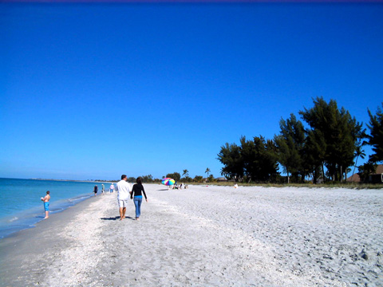
So this was it. The island of captives. Captiva, they called it. The hotel resembled a manor from ancient times, with Roman pillars and bulbous white balconies that overlooked the ocean. And the ocean danced at its doorstep, just metres away, the waves curling in and sweeping toward me. I opened the taxi door. Salt tingled the tip of my tongue. I walked forward. Sleek sportfishing boats cruised up and down the coastline, and green specks of islands hovered in the distance. The waves marched in from the Gulf of Mexico, sighing as they splashed down on the beach. You could dive in that ocean, you could swim, you could . . . drown.
Here is a little map, to give you some perspective.

The first noticeable feature on Sanibel Island is the Ding Darling Refuge, at least to a nature lover, like me . . .
His hand swept over the quaint souvenir shops to our right, nestled between massive, twisted trees and then, the taxi shuttled us past a bald white sign that read, “Ding Darling Refuge.”
I looked at the entrance, at the thick fringe of vines, and at creepy mangroves with their exposed roots. Weird long-necked birds like snakes with wings flew over a swamp in the distance.
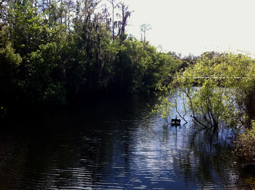
This was actually taken in the Everglades region, since I didn't photograph an anhinga on Sanibel, but a number of these unusual birds inhabit the refuge. They're also known as snakebirds, darters or water turkeys. Their plumage is somewhat permeable, and they spread their wings to dry after diving.
A look at the Ding Darling Wildlife Drive
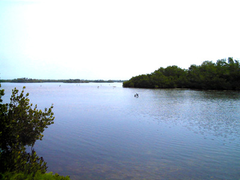
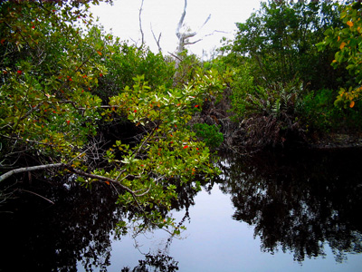
But Erin discovers Ding Darling on the run. And flees onto a trail something like the Shell Mound Trail, only a less advertised and tourist-friendly version.
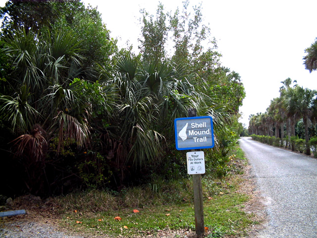
On the roadway up ahead, a gap opened in the wall of leaves, an overgrown path that weaved through the tangles. A breeze brushed through the leaves, tugging them apart, like an invitation. I pulled over, slid the bike under snarled cactus and odd pretzel-shaped trees, and raced—at a limping pace—into the jungle of mangroves, weeds, and bushes.
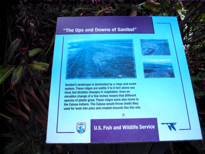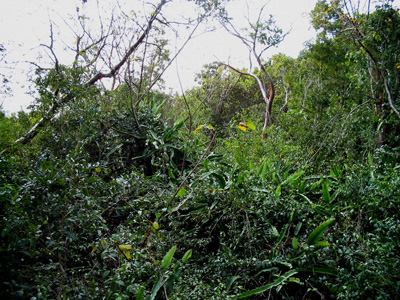
Try to imagine weaving through the tangled growth and encroaching mangroves.
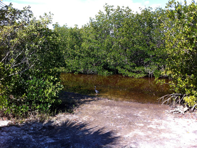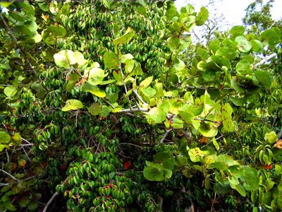
Of course, if you wander off the beaten path, and even on the path, you must beware of the dangerous creatures that inhabit this jungle.
Like, well . . .
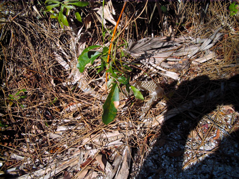
First you see evidence of their presence.
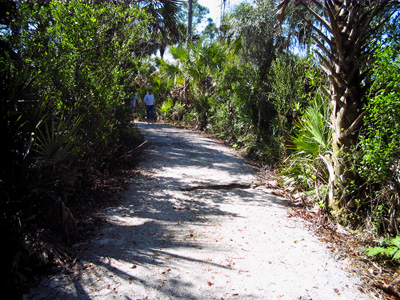
Then you might encounter them along a path. This was a rattlesnake I came upon, not on Sanibel, but in the general vicinity.
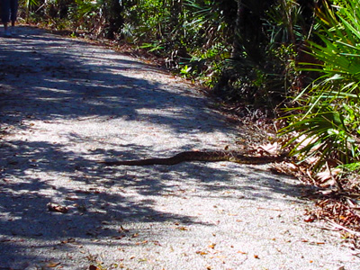
Luckily he wasn't agressive and eventually slithered away.
And Ding Darling has plenty of alligators. One year we biked on the Wildlife Drive and found ourselves surrounded; gators filled every dip and ditch. At one point I slipped off my bike to videotape the reptiles.
"Um, Deb," said my husband. "Instead of recording the gators way out there (cruising in the swamp several metres away) why don't you tape the one right in front of you? Or better yet, run!"
Sure enough, I looked down the slope in front of me, and, casually disguised in the grass and within spitting distance, was a hungry-looking gator. I jumped back on my bike and pedalled to beat the wind, "like a stormchaser."
I have memories of . . .
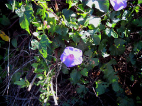
morning glories,
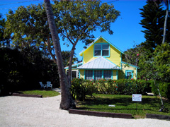
pale pastel colours
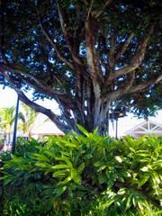
and banyan trees.
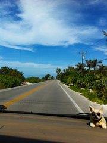
And of course Sanibel-Captiva Road.
Ignore the bobble-head puppy on the dash.
Tall coconut palm trees arched over the street like umbrellas. With their split trunks, the banyan trees looked like residents of the Forest of Fangorn. Next came the restaurants, painted in pastel colours, and a string of over-jazzed souvenir shops. Then emerald-green bushes and rosily blushing blooms and a few smaller streets with names like Chapin and Andy Rosse Lane.
And if you've ever been to the islands, you must have seen the lighthouse . . .
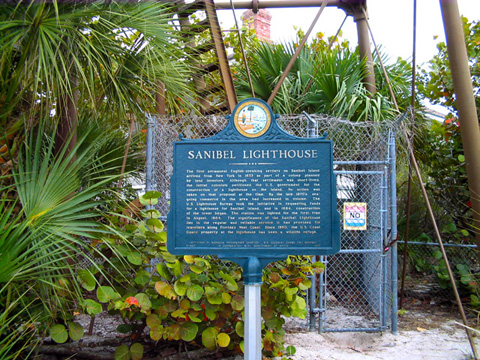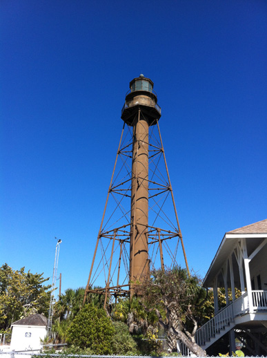
But what I remember the most from my visits are the pirates . . .
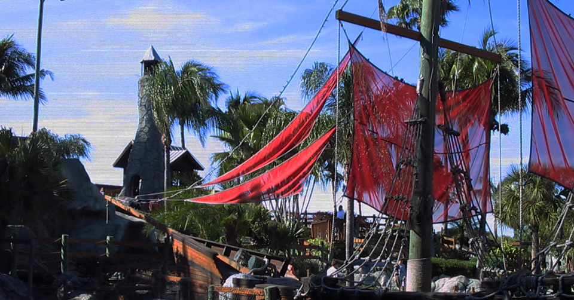
I headed to my favourite bookstore and there they were, embedded in the history of Florida.

You may enter the islands with visions of alligators and pirates, but you can't leave without ice cream!
“Dorothy, we’re not in Canada anymore,” I whispered. But it was more than just Florida. The island shimmered, like an oasis with a surrounding wilderness of sea instead of desert. 'I can breathe here.' Spanish moss dangled like emerald webs from tall trees. People strolled by in pink tank tops and butt-hugging shorts. The air was sharp and fragrant. And it was dirty.
Not garbage-filth-layered dirty. Fresh dirty, with sand, mud, ecstatic plants. Not a hint of sterile surfaces or pine-scented disinfectant. Nor was there the smell of sweat-drenched uniforms and stale indoor ice.
This is perfect, I thought.
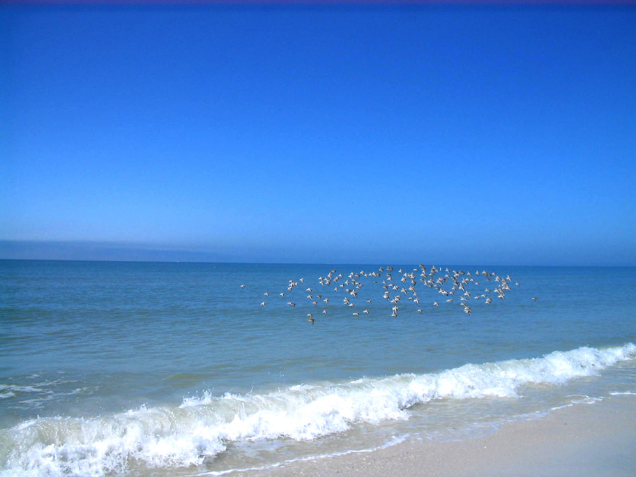